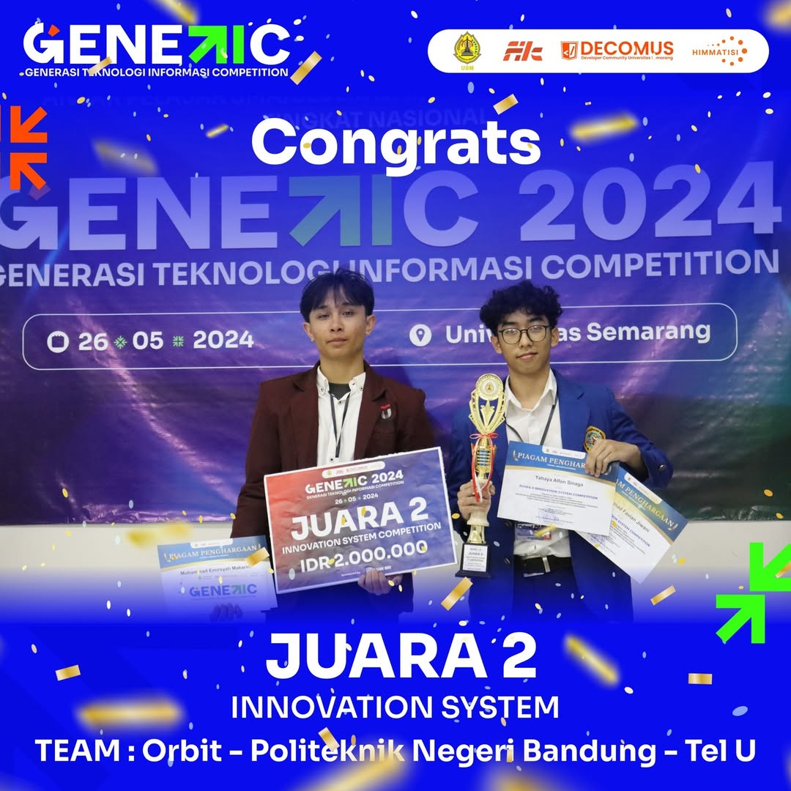

Kegiatan-kegiatan dalam DECOMUS (Developer Community Universitas Semarang) dirancang untuk mendukung pengembangan keterampilan teknis dan kolaborasi mahasiswa dalam bidang teknologi informasi. Berikut adalah beberapa contoh kegiatan yang diselenggarakan:
Contoh kegiatan: Generasi Teknologi Informasi Competition (Genetic), yang mengusung tema-tema inovatif seperti Telemedicine dan Kesehatan Digital. Kompetisi ini bertujuan mendorong peserta untuk mengembangkan solusi berbasis web atau mobile yang mendukung pelayanan kesehatan
Peserta DECOMUS sering diajak untuk bekerja dalam tim untuk mengembangkan aplikasi atau perangkat lunak yang bisa diaplikasikan secara nyata, baik untuk komunitas maupun masyarakat luas.
Kegiatan berbagi pengalaman dengan sesama anggota atau alumni, termasuk mendiskusikan tren teknologi terbaru dan peluang karier di bidang IT.